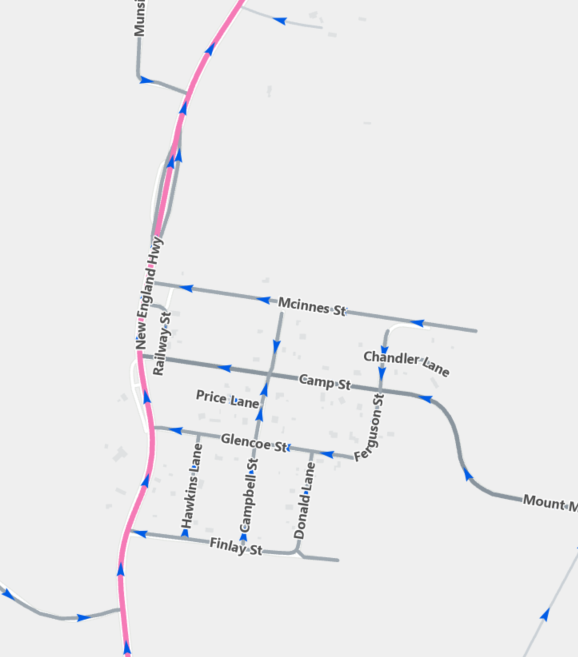

← Back to portfolioEmergency Evacuation Planning
ArcGIS Pro · Network analysis
Overview
Built a road network model across Glen Innes LGA to support emergency evacuation planning from residential addresses. The project brought network analysis and map design together to present evacuation routes and alternative route options.

My contribution
- Built and created the road network dataset for Glen Innes LGA.
- Applied spatial and network analysis using residential addresses to identify evacuation routes and alternatives.
- Produced evacuation plan maps showing routes in the context of local streets and connecting roads.
Workflow
Road and residential address data → Road network dataset → Evacuation and alternative route analysis → Evacuation plan maps
Result
Delivered mapped evacuation routes and alternatives, providing a clear spatial reference for reviewing route options from residential locations across the LGA.
← Back to portfolio